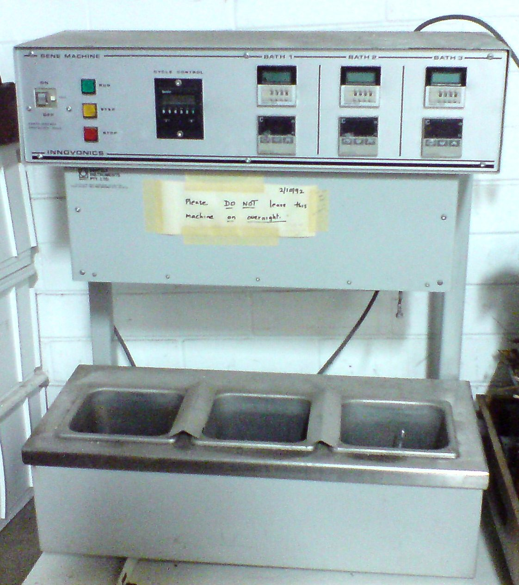

Bioteknologji - Senior - M2 — CRISPR-Cas9


- Cas9 pret ADN të drejtuar nga ARN-udhëzues (gRNA)
- PAM (p.sh. NGG për SpCas9) nevojitet pranë vendit të synuar
- Prerja dyfishe (DSB) riparohet me NHEJ ose HDR
- NHEJ shpesh sjell indele (çaktivizim gjeni)
- Rrezik: prerje jashtë-objektivit (off-target)